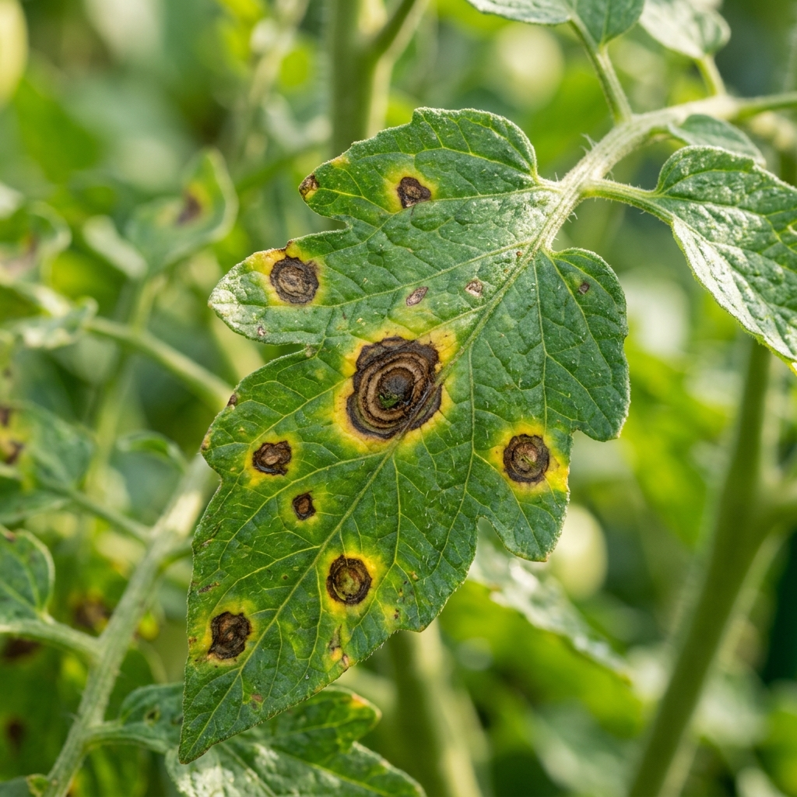

Good afternoon, Farmer 👋
Your intelligent agriculture assistant
Check your crop
Upload a crop photo and get an AI-powered analysis with immediate biological and chemical treatment solutions.
Quick Actions
AI Mitra
Ask a question about farming
My Farm
Manage your farm
History
View previous scans
Government Schemes
Explore farmer subsidies
Recent Activity
My Farm
DEMO DATAManage your crops and farm information
My Crops
3History
DEMO DATAView your previous crop analyses
Recent Analyses
4Government Schemes
DEMO DATADiscover government schemes and support available for farmers
Available Schemes
6Scan your crop
Take or upload a clear photo of your crop
Ready to check your crop?
Take a clear photo of the affected part of your plant.
This is a demonstration result. Connect the crop analysis backend for real AI diagnosis.
Early Blight
Pathogen: Alternaria solani
Concentric target-like rings surrounded by chlorotic yellow halos on lower foliage, indicating active fungal spore germination.
Observed Symptoms
Recommended Treatment
Prevention & Care Tips
AI Mitra
Your agriculture assistant
Rajesh Kumar
DEMO PROFILEActive · Verified Farmer
Personal & Contact Details
Supported account informationMy Farm Summary
Current farm operations from your active plotsAccount & Preferences
Manage language and session settingsSettings & Preferences
Manage your application language, display preferences, and session data.
Language / भाषा
Select your preferred interface language. Changes update the application immediately.
Display & Appearance
Visual mode and contrast configuration for field and daylight use.
Privacy & Data Storage
Information on how your farming data, scans, and session are stored.
KisanMitra AI currently runs in a client-side demonstration architecture. Your active crop plots, scan histories, and recent activities reside within this browser session and in-memory application state. No personal farm photos or mobile numbers are sent to external cloud third parties.
Account & Shortcuts
Quickly jump to your profile, farm plots, or end your session.
Reset Demo Data
Restore sample farm plots, scan histories, and recent activities to initial state.
If you have modified sample crop records, added custom plots, or tested scans and want to restore the clean initial dataset, you can reset client-side application state back to defaults.
AI Crop Pathology Scanner
Drag & drop leaf photo here, or click to browse files from your device
